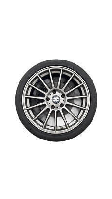
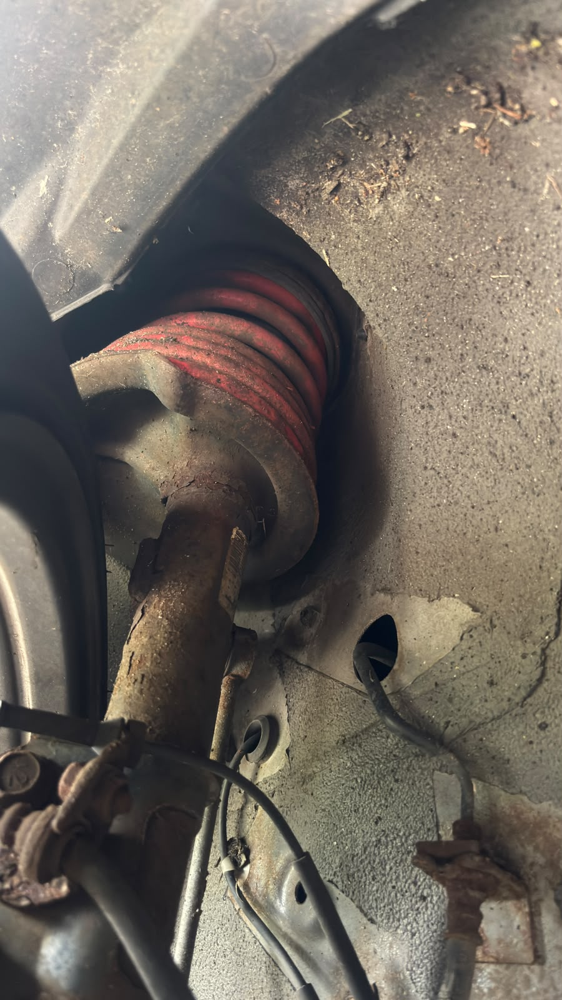

Redefine the way you Drive
Explore exterior styling, wheel fitment and aerodynamic details for your Swift Sport. Build a look that works beyond the driveway.
 Swift Sport
Car Tuning
Swift Sport
Car Tuning
Explore exterior styling, wheel fitment and aerodynamic details for your Swift Sport. Build a look that works beyond the driveway.

01 / DESIGN PHILOSOPHY
Exterior tuning changes how a car looks, but the best upgrades also consider fitment, durability and everyday usability. On the Suzuki Swift Sport, subtle changes to the wheels, body details and stance can create a distinct appearance without sacrificing the car's practical character.
02 / VISUAL UPGRADES
01 / BODY STYLING
Body kits can change the Swift Sport's overall shape and give it a more distinctive look. Well-fitting parts should align with the original bodywork, attach securely and avoid sharp edges or interference with moving components.
02 / WHEEL DESIGN
Wheel diameter, width and offset influence how the car looks and drives. Tyre size, load rating and clearance are important when choosing a setup that combines appearance with safe handling.

03 / VISUAL DETAILS
Vinyl wraps and surface finishes can give the Swift Sport a new identity without permanently repainting the bodywork. Quality materials and careful application help achieve a clean result.
04 / ROAD PRESENCE
Lowering springs and suspension changes can alter the car's stance, comfort and available ground clearance. Choose matched components and check tyre clearance, suspension travel and alignment after installation.

03 / DESIGN DETAILS
A front lip, grille details and carefully chosen trim can give the Swift Sport a sharper appearance. Keep airflow, ground clearance and safe fitment in mind when selecting components.
Rear spoilers, diffuser-style trims and subtle accents can create a cohesive look. Their aerodynamic benefits are not guaranteed without proper design and testing.
04 / FINAL DETAILS
A convincing exterior build is about consistency. Wheels, body accents and ride height should complement one another rather than compete for attention. Keep practical details in mind, including parking clearance, maintenance and how the car performs in everyday weather and road conditions.
Continue to Engine for power, cooling and responsible upgrades.
NEXT: ENGINE